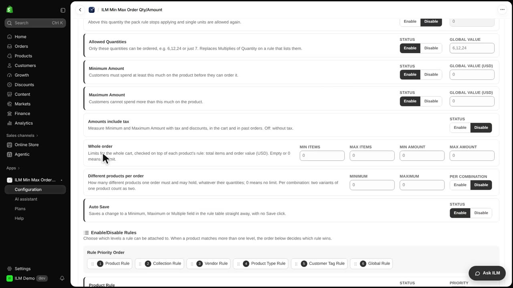
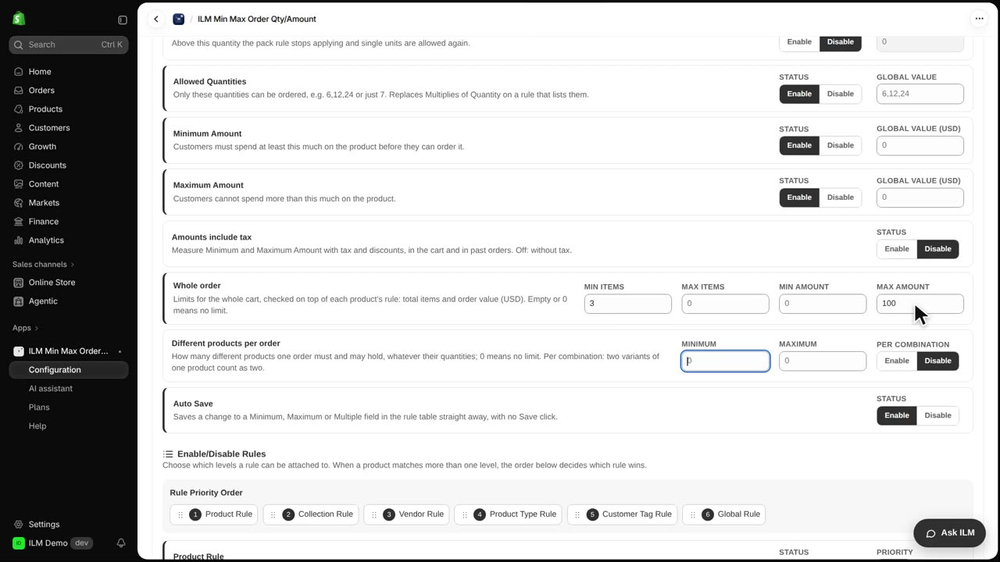
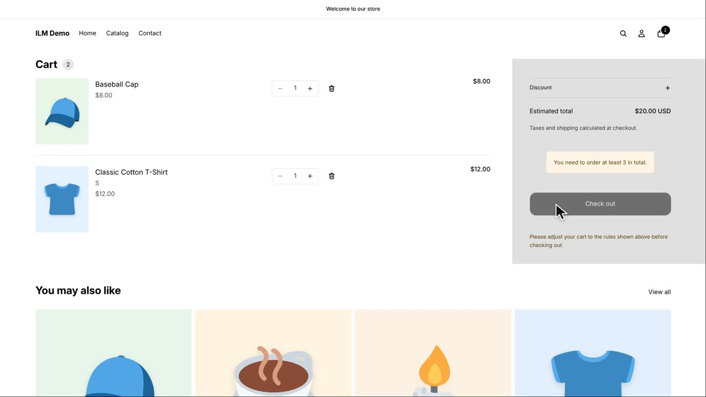
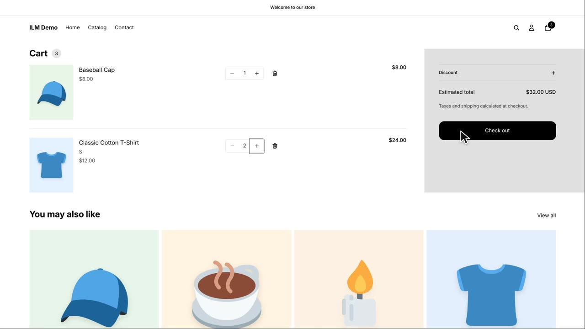
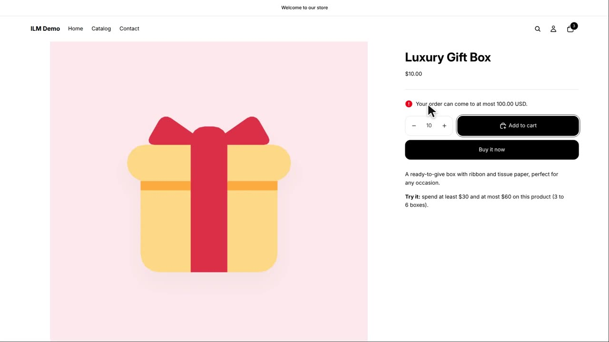

Whole order limits look at the entire cart, not just one product. This is perfect when you want every shopper to buy a minimum number of items or keep the order under a certain amount. In today's example, every order must have at least three items and may cost at most one hundred dollars. We'll set this up on the ILM Demo store and see how it works on the storefront.
First, open the Configuration tab. On the General page, find the Whole order card. This is where you control limits that apply to the entire cart.

Type three in the Min items field and one hundred in the Max amount field. If you leave a field empty, that means no limit for that rule. So here, shoppers must have at least three items and spend no more than one hundred dollars.

Now let's test it. A cart with one Classic Cotton T-shirt and one Baseball Cap has only two items. The cart shows a notice asking for at least three items, and the checkout button is locked. The shopper cannot proceed until they add more items.

If the shopper adds a second Classic Cotton T-shirt, the cart now has three items. The notice disappears and the checkout button becomes active. The order meets the minimum item requirement.

Next, the shopper adds ten Luxury Gift Boxes. The cart total goes over one hundred dollars, so the order is refused. A notice appears explaining the maximum amount limit, and checkout is blocked again.
